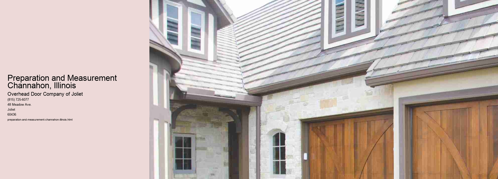

Preparation and Measurement in Channahon, Illinois: A Communitys Blueprint for Success
Nestled at the confluence of the Des Plaines and Kankakee Rivers, Channahon, Illinois, embodies the quintessence of small-town America.
In the realm of education, Channahons schools exemplify the importance of preparation. Educators in the community are dedicated to equipping students with the skills necessary for the challenges of the future. The curriculum is designed not only to meet state standards but also to inspire critical thinking and creativity. Teachers engage in continuous professional development, ensuring they are well-prepared to deliver high-quality education.
In the business sector, preparation and measurement are equally critical. Local businesses in Channahon understand the importance of strategic planning. Entrepreneurs and business owners invest time and resources into market research, financial forecasting, and risk assessment.
Community development in Channahon also relies heavily on preparation and measurement. Local government and civic organizations work collaboratively to plan for the towns future. This involves preparing for population growth, infrastructure needs, and environmental sustainability. Comprehensive plans are developed with input from residents, ensuring that the communitys vision aligns with the needs and aspirations of its citizens. Measurement tools such as surveys, community feedback, and environmental impact assessments are employed to evaluate the effectiveness of these plans. Through this approach, Channahon can make data-driven decisions that enhance the quality of life for its residents while preserving the towns natural beauty and heritage.
In conclusion, the principles of preparation and measurement are deeply embedded in the fabric of Channahon, Illinois. Whether in the classrooms, boardrooms, or town halls, these concepts guide the community towards its goals. By preparing thoughtfully and measuring meticulously, Channahon not only navigates the challenges of today but also lays a strong foundation for a prosperous future. This commitment to preparation and measurement ensures that Channahon remains a vibrant and thriving community, ready to seize the opportunities of tomorrow.
Installation Process Channahon, Illinois